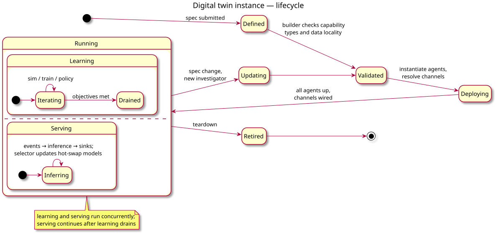
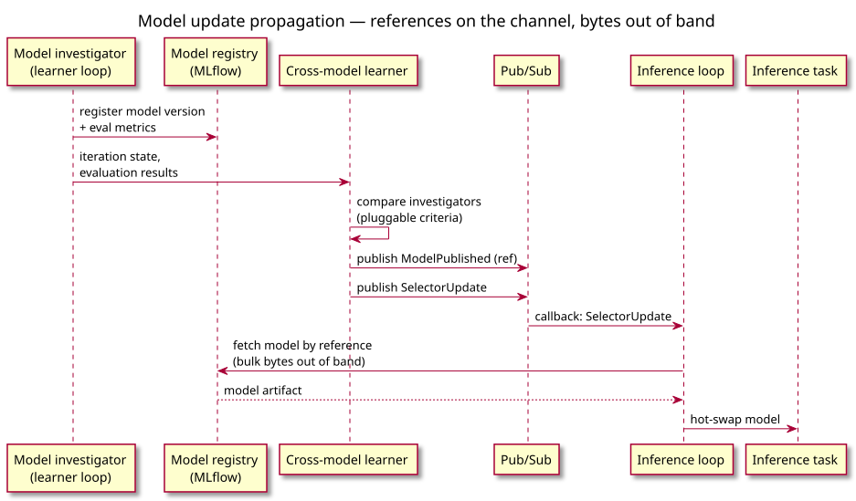

New code is a thin L5 — everything below exists and runs today.
The twin at runtime

Twin lifecycle — learning and serving run concurrently;
learning waits on edge callbacks between rounds.

Model update — references on the channel,
bytes out of band via the registry.
Map to the AmSC use cases
DT component
Realization (Stellar-AI recipes)
Event source
simulation / campaign output stream, user trigger, timer
Capability
e.g. equilibrium reconstruction (M3DC1), fusion surrogate (MATEY fine-tuning)
Investigator
ROSE active-learning loop; training via Rhapsody on Frontier / Perlmutter
Model registry
AmSC MLflow — deployed, ROSE tracker integration merged
Inference task
Rhapsody service task inside the allocation
Access / execution
ORBIT broker + endpoint (RaaS) — m3dc1-rose-aas, heat-rose-aas run this today
Use-case independent by design: sources, evaluation criteria,
and site topology are open — the same architecture serves xGFabric-style
edge pipelines unchanged.
Map to xGFabric
DT component
Realization (three-site closed loop)
Event source
CSPOT wind-sensor stream (UCSB)
Capability
wind field — the multi-architecture case: PCR / PINN / FNO
investigators under one science agent
Investigator
OpenFOAM CFD sims (Notre Dame) feed surrogate training
(Perlmutter GPUs)
Selector
cross-model learner picks the surrogate the edge serves —
today a manual, per-architecture choice
Access / execution
ORBIT broker + endpoints — one outbound WebSocket per site,
zero inbound firewall exceptions
Same architecture as the Stellar-AI mapping — different
sources, sites, and criteria; nothing changes in the framework.
Features
Multi-architecture learning per capability, with
inference-time model selection and hot-swap serving.
Event-driven: any trigger kind — sensor, user, timer, sim,
service; learning restarts on callbacks, criteria are pluggable
(metrics, cost, UQ, human/agent).
Transport-agnostic pub/sub: abstract frontend, adapters for
ORBIT / Redis / MQTT / in-process; references on the channel,
bulk data out of band.
DT-as-a-service: one ORBIT broker hosts many twins
(session per twin, worker process each); the client is a
console — attach, tweak, detach, the twin keeps running.
Composition: capabilities chain into graphs
(SPLIT / AGGREGATE); pre-existing sims wrap as fixed-model nodes.
Implementation plan
Phase
Builds
When
foundations
investigator abstraction · inference-task template ·
pub/sub frontend (+ dev adapter) · land ROSE spec/RaaS branches
Demo — late October: one capability, two investigators,
selector + hot-swap serving, on a Stellar-AI recipe; dev pub/sub
adapter, no graph composition.
API first, YAML later — cast the spec over a proven builder
API, the rose/spec route; capability contracts are data from day one.